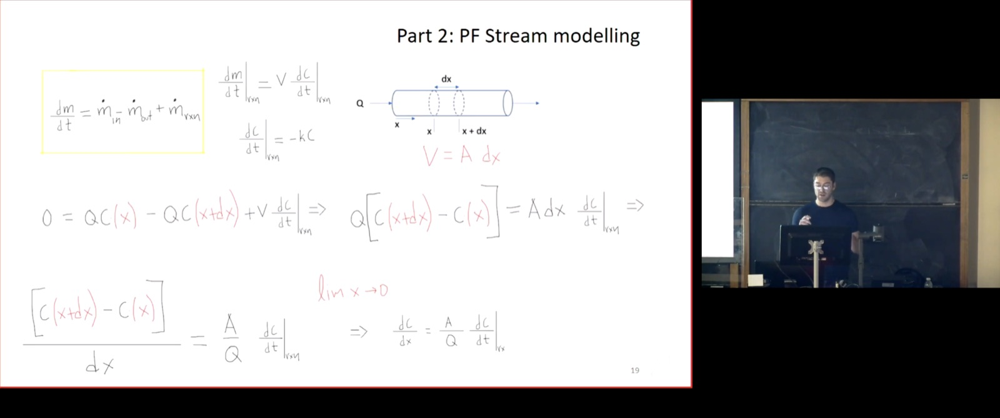
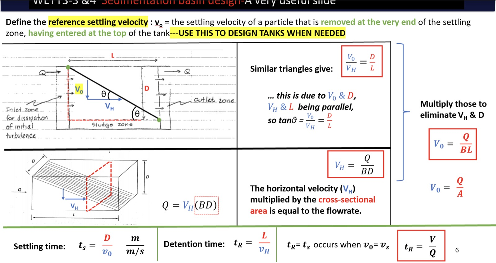
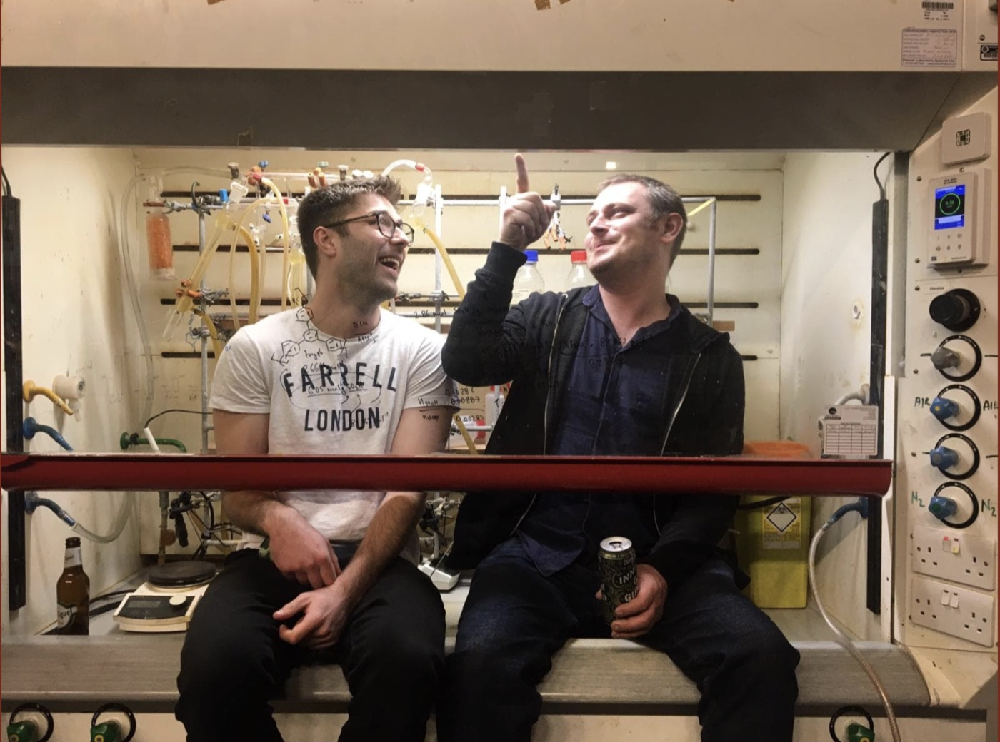

Work experience
-
Jul 2026 – present
Associate Director, Global AI and Data Science
Kyndryl · London, United KingdomLeading the delivery and client integration of Kyndryl's Policy as Code capability. Developing a policy engine that extracts rules from business documents, converts them into Rego, and enforces customer-specific guardrails through Open Policy Agent (OPA). Integrating the capability into customer environments with auditable policy decisions and deployments using Terraform and Argo-based CI/CD.
-
Dec 2025 – Jul 2026
Senior Lead, Global AI and Data Science
Kyndryl · London, United KingdomBuilt an enterprise agentic framework from scratch in pure Python, including function calling, an orchestration engine, dynamic tool discovery and execution, agent memory, concurrency, and configuration-driven MCP servers, registry and gateway. Delivered end-to-end observability using OpenTelemetry (OTel), OpenLLMetry, Prometheus, Grafana Mimir and dashboards.
-
Sep 2024 – Nov 2025
Senior Data Scientist, AI / ML
Traydstream · London, United KingdomTrained and productionised ML models for FinTech, focusing on both text and multimodal LLMs.
- Fine-tuned multimodal LLMs with full-parameter fine-tuning, LoRA and QLoRA.
- Optimised object-detection pipelines (CNNs) on Azure VMs and built efficient data pipelines.
- Developed APIs with FastAPI and Flask, and managed Docker environments.
- Worked on agentic AI for financial compliance checks, rigorously evaluated LLM outputs, and ran VM-hosted Transformer models with Hugging Face and vLLM.
-
Feb 2024 – Sep 2024
Data Scientist, Research & Development
Twyn Holdings Limited · London, United KingdomMy work focused on LLMs: prompt engineering techniques such as few-shot and chain-of-thought for multi-label classification, fine-tuning LLMs, and LangChain for multi-agent systems and RAG pipelines. I fine-tuned and maintained models in production on Azure OpenAI and Azure Machine Learning Studio.
-
Mar 2023 – Nov 2023
Business Intelligence / Data Analyst
Xenos Group Hotels · Zante, GreeceApplied data analytics in Excel to room occupancy, pricing trends and customer booking patterns, to optimise resource allocation.
-
Sep 2021 – Oct 2022
Civil Engineering Teaching Fellow
School of Civil and Environmental Engineering, The University of EdinburghLectured, designed course material and was responsible for the academic examination of two courses: Environmental Engineering and Water Engineering. Delivered classes in Engineering Mathematics (vector calculus and statistics) and Engineering Design, and did scientific programming for wave simulations with Python and finite-element methods.

One of my most enjoyable times: teaching engineering at the University of Edinburgh. 
From back when I felt like the god of editing presentations.
Education
-
Jul 2017 – Jul 2021
PhD, Chemistry
The University of Edinburgh · School of Chemistry (Prof. Neil McKeown)Thesis: Design and synthesis of porous adsorbents for water purification.
- Applied regression methods and data modelling using MATLAB® and Origin®.
- Used computational techniques to fit physisorption and chemisorption models, and investigated how linearisation affects the statistical error distributions in regression.
- Two nominations for the "Tutor of the Year" award.

Captured in action, performing "cutting-edge research". -
Sep 2013 – Jul 2017
BSc, Chemistry First Class
The University of Edinburgh · School of Chemistry (Prof. Michael Shaver)First-class honours. Achieved the highest average (GPA) in my year and received the award for Outstanding Academic Performance.
What I learnt during my STEM education
- Statistics & modellingStatistical error analysis and error functions to quantify and select the best models, with linear and non-linear regression.
- Materials synthesisSynthesis of soft-matter materials, colloids and various chemical entities for diverse applications.
- NMR spectroscopyStructure elucidation and compound verification, including solid-state NMR.
- Chromatography & mass specGC-MS and LC-MS for the analysis of complex mixtures.
- IR spectroscopyFunctional-group identification and compound analysis.
- UV-vis & fluorescenceQuantitative analysis of compounds and tracing of free radicals in various systems.
- ICP-OESPrecise measurement of trace elements in diverse matrices.
- Air-sensitive techniquesSchlenk lines and glove boxes for controlled-environment experiments.
- Materials characterisationDetailed characterisation to confirm compound integrity and function in specific applications.